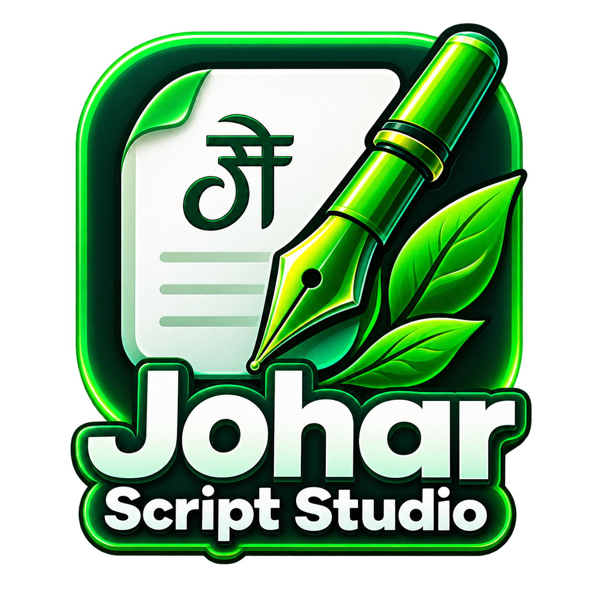

Web App
Live
Johar Script Studio
Font Translator & Keyboard
Real-time script transliteration aur virtual keyboard studio — Masaram Gondi, Gunjala Gondi, Ol Chiki, aur Devanagari typing ke liye offline-ready web tool.